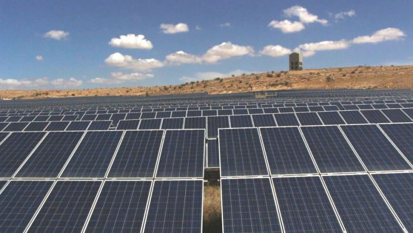

SHAMS ALHASHIMIAH
energy generation project under the name of Shams Al-Hashimiah, which produces electrical energy with a capacity of 5 megawatts and at a cost of 5.6 million dinars. It contributed to reducing the university’s annual energy bill from 2.5 million dinars to zero, as the university recovered the cost of the project within a year and six months. The project covers double the university's need of electricity and meets the university's requirements and expansion, including for the next 25 years. The project was inaugurated with a ceremony attended by Prince El Hassan bin Talal .
Zaatari camp (Jordan)
November 13, 2017 - The solar power plant, which is the largest solar power plant in the world in refugee camps, was inaugurated today in the Zaatari camp in Jordan, with funding from the German government through the German Development Bank (KFW). ). The plant, valued at 15 million euros, will provide renewable and clean energy to 80,000 Syrian refugees both inside the camp and to urban areas around the camp. The solar power plant, with a maximum capacity of 12.9 megawatts, will allow UNHCR to increase the hours of electricity provision to refugee shelters from 8 to 14 hours. These additional hours will alleviate the difficult living conditions for families in the camp and improve their safety and security, in addition to the possibility of storing food and allowing children to do their homework.

HOME
A consumer who used to pay about $133.31 per month for the cost of electricity consumption could save $79.9 per month as a result of installing a solar energy system for his home, thus making his monthly bill only $53.33. If the consumer follows a rationalization system, he will be able to store a surplus that is calculated at the end of the year and the cost of solar energy for homes will be calculated based on the fees of the regular meter only.

survey
rating